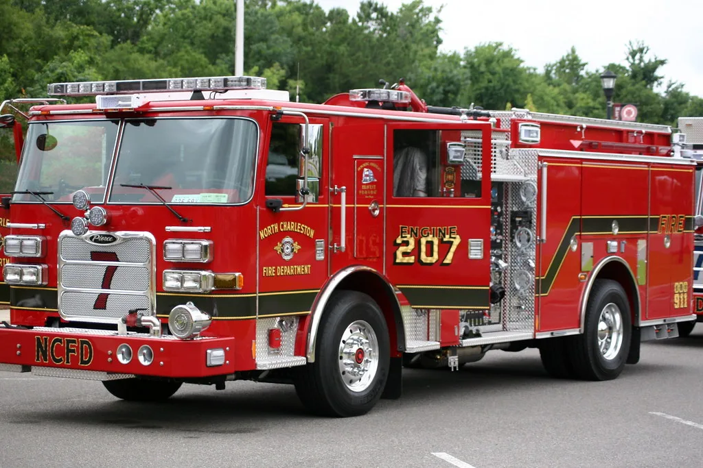

인천 쿠팡 물류센터 화재, 61시간 만에 큰불 잡혀
지난 18일 오전 발생한 인천 서구 석남동 쿠팡 물류센터 화재가 61시간 만에 큰 불길을 잡는 데 성공했다. 전날 오후 8시께 초진이 이뤄졌으며, 21일에는 건물 내부에 남은 잔불을 정리하는 작업이 본격적으로 진행됐다. 사흘 가까이 이어진 진화 작업 끝에 상황이 안정 국면에 접어든 모습이다. 발생 초기 걷잡을 수 없이 번지던 불길이 마침내 잡히면서, 현장 인근 주민들과 소방 당국 모두 한숨을 돌린 분위기다.
큰 불길이 잡히면서 화재 현장 반경 일부를 대상으로 내려졌던 주민 대피령도 전날 밤을 기해 해제됐다. 대피령 해제로 인근 주민들은 일상으로 복귀할 수 있게 됐지만, 도로 통제 등 일부 조치는 잔불 정리와 안전 점검이 마무리될 때까지 유지되고 있는 것으로 전해졌다. 대피 기간 동안 불편을 겪었던 주민들은 완전 진화 소식을 기다리며 안도와 우려가 뒤섞인 반응을 보이고 있다.

이번 화재 진압에는 소방 장비 239대와 인력 845명이 투입됐다. 소방 당국은 건물 내부에 가연성 물질이 많고 내부 구조가 넓어 진화에 어려움을 겪었다고 설명했다. 특히 물류센터 특성상 통로가 미로처럼 얽혀 있고 적재된 물품이 많아, 소방관들이 화점에 접근하는 것 자체가 쉽지 않았던 것으로 전해졌다. 초기 진화가 이뤄진 뒤에도 곳곳에 잔불이 남아 있을 가능성이 커, 완전 진압까지는 시간이 더 필요할 것으로 보인다.
화재 초기에는 소방 대응 단계가 빠르게 격상됐다. 발생 두 시간 만에 대응 1단계가 발령된 데 이어 낮 시간대에는 2단계로 상향됐고, 이후 국가 소방동원령 1호까지 발령되면서 인근 지역의 소방 인력과 장비가 대거 투입됐다. 이는 이번 화재의 규모가 그만큼 컸다는 점을 보여준다. 충남과 충북, 강원 등 인접 지역의 소방력까지 지원에 나서면서 광역 단위의 총력 대응이 이뤄졌다.

소방 당국은 국가소방동원령 체계를 유지한 채 잔불 정리에 남은 인력과 장비를 계속 투입하고 있다고 밝혔다. 건물 내부가 완전히 식고 안전이 확인될 때까지는 동원 체계를 풀지 않겠다는 방침이다. 진화가 장기화하면서 현장에 투입된 소방관들의 피로 누적도 우려되는 만큼, 인력을 교대로 투입하며 체력 관리에도 신경을 쓰고 있는 것으로 전해졌다.
이번 화재로 물류센터 운영에도 상당한 차질이 빚어질 것으로 예상된다. 해당 센터에서 처리하던 물량이 인근 다른 물류거점으로 옮겨가면서 일부 지역의 배송 지연이 발생할 가능성도 거론된다. 회사 측은 고객 불편을 최소화하기 위한 대책을 마련 중인 것으로 알려졌다.
정확한 화재 원인과 피해 규모에 대한 조사는 이제부터 본격적으로 이뤄질 전망이다. 당국은 잔불 정리가 끝나는 대로 현장 감식에 착수해 발화 지점과 원인을 규명할 계획이며, 물류센터 운영에 미칠 영향과 향후 안전관리 대책에도 관심이 모아지고 있다. 대형 물류시설에서 반복되는 화재를 계기로, 유사 시설 전반에 대한 소방·안전 점검을 강화해야 한다는 목소리도 함께 커지고 있다. 특히 물류센터처럼 대규모 인력과 물자가 집중된 시설의 경우, 화재 예방과 초기 대응 체계를 다시 점검해야 한다는 지적이 잇따르고 있다.